Overview
This page provides a comprehensive architectural reference for the Venus Library Manager application. It documents all major system components, data flows, security mechanisms, and user-facing features using structured diagrams and process tables.
Venus Library Manager is a dual-interface application (GUI + CLI) built on NW.js and Node.js. It manages Hamilton VENUS HSL libraries through a custom binary container format with HMAC-SHA256 integrity protection, package signing, role-based access control, and a JSON-file database.
Table of Contents
- High-Level System Architecture
- Data Model & Storage
- Binary Container Format
- Creating / Packaging a Library
- Importing / Unpacking a Library
- Exporting a Library Archive
- Importing a Library Archive
- Library Delete Flow
- Version Rollback Flow
- Integrity & Signing Pipeline
- System Library Integrity Verification
- Authorization & Access Control
- GUI Navigation & Group System
- CLI Command Map
1. High-Level System Architecture
The system is organized into four layers: User Interfaces, Shared Core, Data Layer, and External Systems. Both the GUI and CLI depend on a shared module (lib/shared.js) that implements all container, signing, validation, and authorization logic.

Component Summary
| Component | Technology | Source File(s) | Responsibilities |
|---|---|---|---|
| GUI | NW.js (Chromium + Node.js) | html/index.html, html/js/main.js | Desktop UI for all library operations: import, export, create, delete, rollback, search, group management, settings, event history |
| CLI | Node.js + yargs | cli.js | 12 scriptable commands for headless/CI operation: list-libs, import-lib, import-archive, export-lib, export-archive, delete-lib, create-package, list-versions, rollback-lib, generate-syslib-hashes, verify-syslib-hashes, verify-package |
| Shared Core | Node.js module | lib/shared.js | All cryptographic, validation, container, and authorization logic shared between GUI and CLI |
| Data Layer | diskdb (JSON files) | db/*.json, local/*.json | Persistent state: settings, installed libraries, groups, tree, audit trail, package cache, publisher registry, system library definitions |
| Integrity Worker | Node.js child process | html/js/syscheck-worker.js | Background startup task: file integrity checks, missing package detection, backup prompts. Reports results to GUI via IPC. |
2. Data Model & Storage
All persistent data is stored as JSON files managed by diskdb. The database is split into two directories: db/ contains shipped default/reference data, and local/ contains per-machine state that changes during operation. See Data Model for the full specification.
Settings (db/settings.json)
| Field | Type | Description |
|---|---|---|
_id | string | Always "0" (singleton record) |
recent_max | string | Maximum number of recent items to display |
chk_confirmBeforeInstall | boolean | Show confirmation dialog before installing a library |
chk_autoAddToGroup | boolean | Automatically assign imported library to a group |
chk_hideSystemLibraries | boolean | Hide system libraries from the default library view |
chk_includeUnsignedLibs | boolean | Include unsigned libraries in library listing |
chk_showGitHubLinks | boolean | Display GitHub repository links on library cards |
chk_requireActionComment | boolean | Part 11: require comment for every action |
chk_requireActionSignature | boolean | Part 11: require signature for every action |
chk_part11StrictLibraryAuth | boolean | Regulated mode: strict deny-by-default authorization |
starred_libs | array | List of starred/favorited library IDs |
Installed Libraries (local/installed_libs.json)
| Field | Type | Description |
|---|---|---|
_id | string | Auto-generated unique identifier |
library_name | string | Unique library display name |
author | string | Package author |
organization | string | Author's organization |
version | string | Version string from manifest |
venus_compatibility | string | Compatible VENUS version(s) |
description | string | Library description text |
github_url | string | Source repository URL |
tags | array | Sanitized tag strings |
created_date | string | Package creation date (ISO 8601) |
library_image | string | Image filename |
library_image_base64 | string | Embedded icon (base64 data) |
library_image_mime | string | MIME type of the image |
library_files | array | Relative paths of all library files |
demo_method_files | array | Relative paths of demo method files |
help_files | array | CHM help filenames |
com_register_dlls | array | DLL filenames requiring COM registration |
lib_install_path | string | Disk location of installed library files |
demo_install_path | string | Disk location of installed demo methods |
installed_date | string | When the library was installed (ISO 8601) |
installed_by | string | Windows username who installed |
source_package | string | Original package filename |
file_hashes | object | Map of filename → SHA-256 hash |
public_functions | array | Parsed HSL public function signatures |
required_dependencies | array | Resolved #include dependencies |
deleted | boolean | Soft-delete flag |
deleted_date | string | When soft-deleted (ISO 8601) |
System Libraries (db/system_libraries.json)
| Field | Type | Description |
|---|---|---|
_id | string | sys_ prefixed MD5 identifier |
canonical_name | string | Internal canonical name |
display_name | string | Display name for the UI |
is_system | boolean | Always true |
is_read_only | boolean | Always true (cannot be modified) |
author | string | Always "Hamilton" |
discovered_files | array | Relative file paths belonging to this library |
resource_types | array | File extensions present (e.g., .hsl, .hs_) |
venus_version | string | VENUS version association |
Groups (local/groups.json)
| Field | Type | Description |
|---|---|---|
_id | string | Auto-generated ID or gXxx prefix |
name | string | Display name of the group |
icon_class | string | FontAwesome icon class |
default | boolean | Whether this is a built-in group |
navbar | string | "left" or "right" placement |
favorite | boolean | Favorited flag |
protected | boolean | Cannot be deleted (e.g., Hamilton group) |
Tree (local/tree.json)
| Field | Type | Description |
|---|---|---|
group_id | string | References a Groups._id |
method_ids | array | List of library _id values assigned to this group |
locked | boolean | Prevents drag-and-drop reordering |
Audit Trail (local/audit_trail.json)
| Field | Type | Description |
|---|---|---|
event | string | Event type code (e.g., library_imported, library_deleted) |
timestamp | string | ISO 8601 timestamp |
username | string | Windows username |
windows_version | string | OS version string |
venus_version | string | Installed VENUS version |
hostname | string | Machine hostname |
details | object | Event-specific data (library name, version, etc.) |
Publisher Registry (local/publisher_registry.json)
| Field | Type | Description |
|---|---|---|
author | string | Publisher name (primary key) |
count | integer | Number of times this publisher has been seen |
last_org | string | Last organization associated with this author |
known_tags | array | All tags ever used by this publisher |
Links (db/links.json)
| Field | Type | Description |
|---|---|---|
_id | string | "lib-folder" or "met-folder" |
path | string | Filesystem path to VENUS directory |
Entity Relationships

3. Binary Container Format
All .hxlibpkg and .hxlibarch files use a custom binary container. See Binary Container Format for the full specification. Below is a summary of the container structure and the pack/unpack processes.
Container Layout (48-byte header + payload)

| Field | Size | Description |
|---|---|---|
| Magic | 8 bytes | HXLPKG\x01\x00 for .hxlibpkg, HXLARC\x01\x00 for .hxlibarch |
| Flags | 4 bytes | uint32 LE, reserved (currently 0) |
| Payload Length | 4 bytes | uint32 LE, byte length of the scrambled payload |
| HMAC-SHA256 | 32 bytes | Cryptographic digest over the scrambled payload bytes |
| Scrambled Payload | N bytes | XOR-scrambled ZIP data using a 32-byte repeating key |
Pack Process (packContainer)
| Container Packing | |
|---|---|
| 1. Get raw ZIP buffer | Call AdmZip.toBuffer() to get the raw ZIP bytes |
| 2. XOR scramble | Apply 32-byte repeating XOR key to all ZIP bytes, destroying ZIP magic signatures |
| 3. Compute HMAC | Generate HMAC-SHA256 over the scrambled bytes using the application signing key |
| 4. Build header | Construct 48-byte header: magic (8B) + flags (4B) + payload length (4B) + HMAC (32B) |
| 5. Concatenate | Buffer.concat([header, scrambledPayload]) → final container file |
Unpack Process (unpackContainer)
| Container Unpacking | |
|---|---|
| 1. Verify magic bytes | Read first 8 bytes; must match expected magic for the file type |
| 2. Read header fields | Parse payload length (uint32 LE) and stored HMAC-SHA256 from bytes 8–47 |
| 3. Verify HMAC | Recompute HMAC-SHA256 over scrambled payload; compare using timingSafeEqual |
| ➔ HMAC mismatch? | Throw error: "file is corrupted or has been tampered with" |
| 4. XOR de-scramble | Apply same 32-byte key to recover original ZIP bytes |
| 5. Return ZIP buffer | Recovered ZIP buffer ready for new AdmZip(buffer) |
4. Creating / Packaging a Library
This flow covers building a .hxlibpkg from source files. Available via the GUI Library Packager tool or the CLI create-package command.
▼
| Phase 1: Input Collection | |
|---|---|
| Source: GUI or CLI? |
GUI → User fills the Package Metadata Form: library name (auto-detected from .hsl), author, organization, version, VENUS compatibility, description, tags, GitHub URL, drag-drop library files, drag-drop demo methods, library icon image CLI → Read JSON spec file ( --spec path.json) validated against cli-schema.json; resolve all file paths relative to the spec directory
|
▼
| Phase 2: Validation | |
|---|---|
| Validate required fields | author, version, description, venus_compatibility must be present; at least 1 library file required |
| Author = "Hamilton"? |
Yes → Require author password (PBKDF2-HMAC-SHA512, 100K iterations). Invalid password aborts. No → Continue |
| Sanitize & validate tags | Remove reserved words, enforce length limits, deduplicate |
| Validate library name | No path separators, no '..' traversal, no reserved Windows names (CON, PRN, etc.) |
▼
| Phase 3: Package Assembly | |
|---|---|
| Build manifest.json | format_version: 1.0, library_name, author, version, created_date (ISO 8601), library_files[], demo_method_files[], help_files[], com_register_dlls[], library_image_base64 (embedded icon) |
| Create AdmZip instance | New empty ZIP archive in memory |
| Add manifest.json | Package metadata at ZIP root |
| Add library files | All library files → library/ directory in ZIP |
| Add help files | CHM files → library/ directory in ZIP |
| Add demo method files | Demo .hsl files → demo_methods/ directory in ZIP |
| Add icon image | Library icon → icon/ directory in ZIP |
▼
| Phase 4: Signing (signPackageZip) | |
|---|---|
| 1. Hash every ZIP entry | SHA-256 hash of each file’s content (excluding signature.json itself) |
| 2. Sort hashes | Sort file hash entries alphabetically by filename |
| 3. Stringify | JSON.stringify(sortedHashes) to create a deterministic payload |
| 4. Compute HMAC | HMAC-SHA256 over the stringified hash payload using PKG_SIGNING_KEY |
| 5. Embed signature | Add signature.json to ZIP: format_version, algorithm, signed_date, file_hashes, hmac |
▼
| Phase 5: Container Wrapping | |
|---|---|
| packContainer() | XOR-scramble ZIP bytes → compute HMAC-SHA256 → build 48-byte header → concatenate |
| Write to disk | Save the binary container as LibraryName.hxlibpkg |
| Audit trail | Append event: package_created with library name, version, author |
5. Importing / Unpacking a Library
This flow covers importing a single .hxlibpkg into the VENUS installation.
▼
| Phase 1: File Reading & Unpacking | |
|---|---|
| Read raw file bytes | fs.readFileSync(filePath) |
| Unpack container | unpackContainer(buffer, MAGIC_PKG) — verify magic bytes, verify HMAC-SHA256 (timing-safe), XOR de-scramble payload |
| ➔ Failure | Abort: "file is corrupted or has been tampered with" |
| Parse ZIP | new AdmZip(zipBuffer) — read manifest.json from ZIP root |
▼
| Phase 2: Signature Verification | |
|---|---|
| verifyPackageSignature(zip) | Read signature.json, recompute HMAC over stored hashes, compare each file hash to actual ZIP entry |
| Result? |
Valid → Signature confirmed, continue Unsigned → Legacy package (no signature.json), continue with warning Failed → Check for --force flag. With force: continue with WARNING. Without force: abort
|
▼
| Phase 3: Validation | |
|---|---|
| Validate library name | isValidLibraryName() — no path separators, no traversal, no reserved names |
| Author = "Hamilton"? |
Yes (and not a system library) → Require --author-password or GUI password prompt (PBKDF2-HMAC-SHA512)No → Continue |
| Library already installed? |
Yes + no --force → Abort: "already installed" No or --force → Continue (will overwrite existing) |
▼
| Phase 4: Preview (GUI Only) | |
|---|---|
| Show Import Preview Modal | Library metadata, file list with sizes, signature status badge, author info, Confirm / Cancel buttons |
| User response? |
Confirm → Proceed to installation Cancel → Abort |
▼
| Phase 5: Installation (installPackage) | |
|---|---|
| Sanitize file lists | safeZipExtractPath() to prevent path traversal |
| Create directories | Library: HAMILTON\Library\LibName\ — Demo: HAMILTON\Methods\Library Demo Methods\LibName\ |
| Extract ZIP entries | library/* → lib dir, demo_methods/* → demo dir, help_files/* → lib dir. Skip manifest.json, signature.json, icon/ |
| COM DLLs declared? |
Yes (GUI) → UAC-elevated 32-bit RegAsm.exe from C:\Windows\Microsoft.NET\Framework\ via PowerShell Start-Process. Never uses Framework64 — VENUS is a 32-bit (x86) application.No or CLI → Skip COM registration (CLI users must run the 32-bit RegAsm.exe /codebase manually)
|
▼
| Phase 6: Database & Indexing | |
|---|---|
| Upsert DB record | Remove existing record if overwriting; compute SHA-256 file hashes; parse public HSL functions; extract #include dependencies; save to installed_libs.json |
| Auto-assign to group | Hamilton author → gHamilton group. Others → first custom group. Auto-create “Libraries” group if none exist. |
▼
| Phase 7: Post-Install | |
|---|---|
| Cache package | Copy .hxlibpkg to local/LibraryPackages/LibName/ for rollback and repair |
| Audit trail | Append event: library_imported with all library details |
6. Exporting a Library Archive
This flow covers bundling multiple installed libraries into a .hxlibarch file.
▼
| Phase 1: Library Selection | |
|---|---|
| Selection mode? |
--all → Get all installed, non-deleted, non-system libraries --names / --ids → Look up each library by name or ID GUI → User checks libraries in Export Archive modal |
| Filter | Remove system libraries (read-only), deleted libraries, and not-found entries |
▼
| Phase 2: Per-Library Packaging (repeated for each library) | |
|---|---|
| Read DB record | Load library_files, demo_method_files, help_files, com_register_dlls from database |
| Sanitize file lists | sanitizeRelativeFileList() on all file arrays |
| Build manifest.json | Per-library manifest with current metadata |
| Create inner ZIP | manifest.json + library/* files + demo_methods/* files |
| Sign inner ZIP | signPackageZip(innerZip) — hash all entries, compute HMAC, embed signature.json |
| Wrap as .hxlibpkg | packContainer(innerZip, MAGIC_PKG) — XOR scramble + HMAC header |
| Add to outer ZIP | Add LibName.hxlibpkg entry to the archive-level ZIP |
▼ (repeat for each library)
| Phase 3: Archive Assembly | |
|---|---|
| Create archive_manifest.json | format_version: 1.0, archive_type: hxlibarch, created_date (ISO 8601), library_count: N, libraries: [name1, name2, ...] |
| Add manifest to outer ZIP | archive_manifest.json at outer ZIP root |
| Wrap outer container | packContainer(archiveZip, MAGIC_ARC) — XOR scramble + HMAC + HXLARC magic |
| Write to disk | Save as ArchiveName.hxlibarch |
Archive Nesting Structure
Archives use double-nested binary containers. The outer container holds an archive ZIP which itself contains individually-wrapped .hxlibpkg files:

7. Importing a Library Archive
This flow covers importing a .hxlibarch file containing multiple libraries.
▼
| Phase 1: Archive Unpacking | |
|---|---|
| Read raw file bytes | fs.readFileSync(filePath) |
| Unpack outer container | unpackContainer(buffer, MAGIC_ARC) — verify HXLARC magic, verify HMAC, de-scramble outer ZIP |
| Scan outer ZIP | List all .hxlibpkg entries inside the outer ZIP |
▼
| Phase 2: Per-Package Import Loop (repeated for each .hxlibpkg) | |
|---|---|
| Unpack inner container | unpackContainer(entryData, MAGIC_PKG) — verify inner HMAC, de-scramble |
| Parse manifest | Read manifest.json from inner ZIP |
| Verify signature | verifyPackageSignature() on inner ZIP |
| Validate | Library name validation + restricted author check |
| Already installed? |
Yes + no --force → Skip this package (record as failure) No or --force → Proceed with installation |
| Install package | installPackage() — extract files, upsert DB record, compute hashes, parse HSL functions, extract dependencies |
| Cache package | Copy .hxlibpkg to local package store for rollback |
▼ (repeat for each package)
| Phase 3: Summary | |
|---|---|
| Import summary | Succeeded: N, Failed: M (with reasons for each failure) |
| Audit trail | Append event: archive_imported with succeeded[] and failed[] lists |
8. Library Delete Flow
Libraries can be deleted via the GUI or CLI. The process includes authorization checks, optional COM deregistration, file removal, and database updates.
▼
| Phase 1: Authorization | |
|---|---|
| Check access | canManageLibraries() — verify Windows group membership |
| ➔ Denied | Abort: access denied (user not in authorized Windows group) |
| System library? |
Yes → Abort: system libraries are read-only No → Continue |
▼
| Phase 2: Confirmation | |
|---|---|
| Confirmation method? |
GUI → GitHub-style modal: user must type the library name to confirm deletion CLI → Requires --yes or --force flag (no flag = abort)
|
▼
| Phase 3: File Cleanup | |
|---|---|
| COM DLLs registered? (GUI only) |
Yes → Deregister COM DLLs via UAC-elevated 32-bit RegAsm /unregister from C:\Windows\Microsoft.NET\Framework\No or CLI → Skip (CLI users must run the 32-bit RegAsm.exe /unregister manually)
|
| --keep-files flag? |
No (default) → Delete library files from disk, delete demo method files, remove empty directories Yes → Skip file deletion, only update database |
▼
| Phase 4: Database Update | |
|---|---|
| Hard or soft delete? |
Hard (--hard) → db.installed_libs.remove() — permanent deletion from databaseSoft (default) → Set deleted: true, deleted_date: now — record preserved for history
|
| Tree cleanup | Remove library ID from all group tree entries |
| Audit trail | Append event: library_deleted |
9. Version Rollback Flow
Every imported package is cached in local/LibraryPackages/LibName/. Users can restore any previously installed version from this cache.
▼
| Phase 1: Version Selection | |
|---|---|
| List cached packages | Scan local/LibraryPackages/LibName/ for all cached .hxlibpkg files |
| Parse each cached package | Read manifest for version and author; get file stat for cache date and size |
| Sort by cache date | Newest first |
| Version selection method? |
--version X.Y.Z → Find newest cached file matching the specified version --index N → Select the Nth entry from the sorted list GUI → User picks from a dropdown list |
▼
| Phase 2: Reinstall from Cache | |
|---|---|
| Read cached file | Load the selected .hxlibpkg from the package cache |
| Unpack container | unpackContainer(MAGIC_PKG) |
| Parse manifest | Extract library metadata from manifest.json |
| Install package | installPackage() — overwrite existing files, replace DB record, recompute hashes, re-parse HSL functions, re-extract dependencies |
▼
| Phase 3: Completion | |
|---|---|
| Audit trail | Append event: library_rollback with version and source_file details |
10. Integrity & Signing Pipeline
The system uses three layers of integrity protection: package signing at creation time, package verification at import time, and post-install file integrity monitoring.
Layer 1: Package Signing (at creation time)
| signPackageZip() — Creating the Signature | |
|---|---|
| 1. Hash all ZIP entries | SHA-256 hash of each file in the ZIP (excluding signature.json itself) |
| 2. Sort by filename | Alphabetical sort to ensure deterministic ordering |
| 3. Stringify | JSON.stringify(sortedHashes) creates the payload to be signed |
| 4. Compute HMAC | HMAC-SHA256 over the stringified payload using PKG_SIGNING_KEY |
| 5. Embed signature | Add signature.json to ZIP containing: format_version, algorithm, signed_date, file_hashes, hmac |
Layer 2: Package Verification (at import time)
| verifyPackageSignature() — Verifying the Signature | |
|---|---|
| 1. Read signature.json | Extract stored file hashes and HMAC from the ZIP |
| 2. Recompute HMAC | HMAC-SHA256 over the stored hash payload |
| HMAC match? |
No → ERROR: signature has been tampered with Yes → Continue to per-file verification |
| 3. Hash each ZIP entry | Recompute SHA-256 for every actual file in the ZIP |
| All hashes match? |
Yes → VALID signature No → ERROR: file(s) corrupted or modified since signing |
| Extra files not in signature? |
Yes → ERROR: file(s) injected into package No → All files accounted for |
Layer 3: Library Integrity (post-install monitoring)
| Post-Install File Integrity Check | |
|---|---|
| 1. Load stored hashes | Read file_hashes from the library’s database record |
| 2. Recompute on disk | SHA-256 hash of each file currently on disk |
| Hashes match? |
Yes → Library intact — no modifications since import No → Files have been modified since import (triggers repair prompt in GUI) |
11. System Library Integrity Verification
System libraries (Hamilton built-in) use a different integrity strategy based on Hamilton’s proprietary metadata footer embedded in HSL files.
Baseline Generation (generate-syslib-hashes)
| Creating the Baseline | |
|---|---|
| 1. Start from known-good state | Run against a clean, trusted HAMILTON\Library folder |
| 2. Iterate system libraries | Walk through each library defined in system_libraries.json and its discovered_files list |
| 3. Filter to HSL-type files | Only process .hsl, .hs_, .smt files (which contain metadata footers) |
| 4. Parse metadata footer | parseHslMetadataFooter() — extract: $$valid$$, $$checksum$$, $$author$$, $$time$$, $$length$$ |
| 5. Write baseline | Save to system_library_hashes.json with strategy: "hamilton-footer" and per-file valid/checksum/author data |
Verification (verify-syslib-hashes)
| Verifying System Libraries Against Baseline | |
|---|---|
| 1. Load baseline | Read system_library_hashes.json |
| 2. For each baselined file... | Iterate all files in the baseline |
| File exists on disk? | No → Status: MISSING |
| 3. Parse current footer | parseHslMetadataFooter() on the current file |
| Footer present? | No (but baseline had valid=1) → Status: TAMPERED (footer removed) |
| Valid flag changed 1→0? | Yes → Status: TAMPERED (valid flag changed) |
| Checksum matches baseline? |
Yes → Status: OK No → Status: TAMPERED (checksum changed) |
Background Worker (syscheck-worker.js)
| Startup Integrity Worker | |
|---|---|
| Launch | GUI spawns syscheck-worker.js as a child process at application startup |
| Process | Runs integrity checks, detects missing packages, identifies backups needed |
| Report | Sends IPC message to main thread: integrityResults, missingPackages, backupsNeeded |
| UI response | Main thread shows warnings in UI and triggers repair prompts as needed |
12. Authorization & Access Control
The system implements two authorization mechanisms: Windows security group-based access control for protected actions, and password-based protection for restricted author names.
Role-Based Access (Windows Groups)
Protected actions (import, delete, rollback) require Windows group membership verification. The system detects group membership via whoami /groups /fo csv /nh (cached for 15 seconds).
| Check | Groups | Result |
|---|---|---|
| Allow list | Lab Method Programmer, Lab Service | ALLOWED |
| Deny list | Lab Operator, Lab Operator 2, Lab Remote Service | DENIED |
| Not in any list + strict mode ON | (any other groups) | DENIED (strict_default_deny) |
| Not in any list + strict mode OFF | (any other groups) | ALLOWED (compat_default_allow) |
Authorization Decision Flow

Restricted Author Protection
Packages claiming author = “Hamilton” (case-insensitive) require additional authentication to prevent unauthorized Hamilton-branded packages.

13. GUI Navigation & Group System
The GUI uses a left-side navigation bar with fixed tabs and user-created custom groups. Most navigation tabs display the same Library Card Grid view filtered by different criteria.
Navigation Tabs
| Tab | Type | View | Content |
|---|---|---|---|
| All | Fixed | Card Grid | All installed, non-deleted libraries |
| Starred | Fixed | Card Grid | Libraries marked as favorites |
| Recent | Fixed | Card Grid | Recently imported/updated libraries |
| System | Fixed | Card Grid | Hamilton built-in system libraries (read-only) |
| Hamilton | Protected Group | Card Grid | Hamilton-authored user libraries |
| Unsigned | Fixed | Card Grid | Unmanaged HSL files discovered in VENUS Library folder |
| Custom Groups | User-created | Card Grid | User-defined library groupings with custom names and icons |
| Import | Fixed | Import View | Drop zone for .hxlibpkg files + browse file picker |
| Export | Fixed | Library Packager | Metadata form, file drag-drop, icon upload, create .hxlibpkg |
| History | Fixed | Event History | Timeline of all actions with search, filter, CSV export |
Library Card Grid
Each library appears as a card displaying:
- Library icon (or tiled sub-icons for archives)
- Library name, author, and version
- Tags as colored chips
- Star toggle for favorites
- Integrity status indicator
- Click → opens Detail Modal
Modal Dialogs
| Modal | Purpose | Key Features |
|---|---|---|
| Library Detail | Full library information | All metadata, public function list, dependency tree, file hash table, Export / Delete / Rollback actions |
| Import Preview | Pre-import review | Package contents preview, signature status badge, Confirm / Cancel |
| Delete Confirmation | Safe deletion | Type library name to confirm, Hard / Soft delete option |
| Export Choice | Export format selection | Single .hxlibpkg or with-dependencies .hxlibarch |
| Archive Export | Multi-library export | Multi-select checkboxes, Select All toggle |
| Verify & Repair | Integrity management | Per-library integrity status, repair from cache |
| Settings | Application configuration | Part 11 compliance toggles, data directory config, feature flags |
GUI Component Layout

14. CLI Command Map
The CLI (cli.js) provides 12 commands for headless and scripted operation. Four commands are authorization-gated and require appropriate Windows group membership. See CLI Reference for full documentation of each command.
Command Overview
| Command | Auth Required | Required Options | Key Optional Flags |
|---|---|---|---|
list-libs | No | (none) | --include-deleted, --json |
import-lib | Yes | --file | --lib-dir, --met-dir, --force, --no-group, --no-cache, --author-password |
import-archive | Yes | --file | --lib-dir, --met-dir, --force, --no-group, --no-cache, --author-password |
export-lib | No | --name or --id, --output | (none) |
export-archive | No | --all or --names or --ids, --output | (none) |
delete-lib | Yes | --name or --id, --yes | --hard, --keep-files |
create-package | No | --spec, --output | --author-password |
list-versions | No | --name | --json |
rollback-lib | Yes | --name | --version, --index, --lib-dir, --met-dir |
generate-syslib-hashes | No | --source-dir | --output |
verify-syslib-hashes | No | (none) | --hash-file, --lib-dir, --json |
verify-package | No | --file | --json |
Note: Authorization-gated commands are highlighted. Blue = import commands, Red = delete command, Yellow = rollback command. These commands call canManageLibraries() before execution and will abort if the current Windows user lacks the required group membership.
CLI Processing Pipeline
